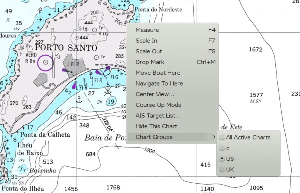
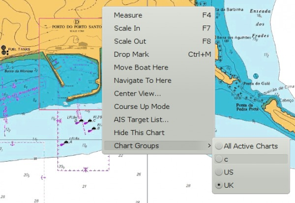

Chart Groups Tab
If this is a new of, or if new chart directories need to be added, use:
Options>Charts>Chart Files Tab or
Options>Charts>Chart Downloader Tab
to Add the new chart directories.
Then click OK to exit from Options and to Scan Charts and Update Database .
After the update finishes, select:
Options>Charts>Chart Groups Tab
in order to Add a New Group.
Now, directories of charts or individual chart file(s) can be added to the chart group(s).
In Options→Charts select “Chart Groups Tab”
You will see two panes. The top pane contains “All Available Charts”, which are the charts you have installed. The bottom pane allows you to create, edit, and delete Groups. Note that there is always an “All Charts” group. This Group is not editable. New Groups which you create may have chart directories or individual charts added to them by selecting the item in the top pane and touching the “Add” button.
You may also remove individual charts or directories from Groups by selecting the desired item in the bottom pane, and touch “Remove Chart”. Please note that “removing” an item from the Group does not remove it from your “Available” set of charts. The item is simply made unavailable when the Group is in use.
It is a good idea to have a empty chart group, only the background Map will be shown. “Unlimited” zooming is allowed. This can be useful for very large scale plotting, for example.
Chart Groups solve the following problem
You may have many charts loaded in your active database. Some of them have overlapping coverage at the same scale, so that when quilted the logic does not know which of potentially several charts at the same scale to choose from. Some examples:
- In the Bahamas there are a few publishers of charts, covering the same areas, with radically different presentations. Sometimes you may want to see one set (say planning charts of small scale), and other times you only want navigation charts of the best scale possible.
- Leave a Group empty, in which case only the background chart will be displayed, very useful sometimes.
- Pilot charts as one Group, normal navigation charts as another Group, makes it possible to quickly switch between them.
- You have both Raster and Vector charts of the same area and want to be able to display each type separately, and switch quickly between them.
- In another universe, NGA charts in one group, standard NOAA RNCs in another, standard NOAA ENCs in another group, British UKHO in a third group or even a group with both ENC and RNC of a particular USCG District.
- The Chart Group function allows us to define multiple Groups, with different chart directories in each group. The Group desired for viewing may be selected quickly, through the right-click menu, without adding or deleting charts from the Active database.
If there are no chart directories listed under All available charts you will not be able to “Add” Chart Groups. A newly added chart directory (also called a folder) cannot be added to a Chart Group unless the Chart Database has been Updated .
Using your Groups
From version 4.8.0 it's possible to quickly change between the first 10 listed chart groups. The numerical keys 0,1,2……..9 corresponds to the chart groups 1,2,3…..10, whatever their name is. It is very simple to use, for example just press “4” and the display changes to show chart group #4 that the user added. Note that group “0” always contains the “All Charts” Chart group.

In this illustration the navigator generally uses the US charts, when available. Coming into Baia do Porto Santo a detailed chart would be great, but no such US chart is available on board. A switch to the UK chart group solves the problem.

Select the Group you want to use, by a right-click context menu item called “Chart Groups”. As you switch Groups the logic tries to select a chart and scale that closely matches the situation present before the switch. As you may understand, sometimes the fit is not reasonable, so the resulting view may be surprising.
Finally, if you have no Groups defined, as in the default installation, all installed charts are always available.
Chart Groups and CM93

It is possible to have multiple instances of CM93v2 in different Chart Groups. Above we have 5 instances loaded in various chart groups. The view is of “All Active Charts”.
OpenCP also supports multiple partial CM93 data sets.
The instances are loaded, from left to right, in the order of the chart groups.
In this situation, only the leftmost instance of CM93, that is not excluded from the quilt, will be displayed. Above, it is the instance represented by the yellow rectangle.